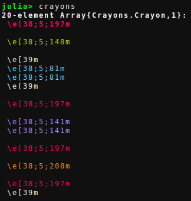
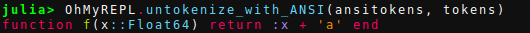
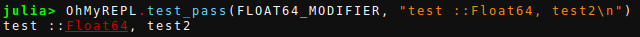

Passes
In OhMyREPL each plugin that changes the way text is printed to the REPL is implemented as a pass. A pass is defined as a function (or a call overloaded type) that takes a list of Julia tokens from JuliaSyntax.jl, a list of Crayons from Crayons.jl, the position of the cursor and sets the Crayons to however the pass wants the Julia tokens to be printed. Both the Syntax highlighting and the Bracket highlighting are implemented as passses.
All the passes are registered in a global pass handler. To show all the passes use OhMyREPL.showpasses():
julia> OhMyREPL.showpasses()
----------------------------------
# Pass name Enabled
----------------------------------
1 BracketHighlighter true
2 SyntaxHighlighter true
----------------------------------A pass can be enabled or disabled at will with OhMyREPL.enable_pass!(pass_name::String, enabled::Bool). As an example, we disable the syntax highlighting:

How a pass works
This section shows how text from the REPL get transformed into syntax highlighted text. The sample text used is:
str = "function f(x::Float64) return :x + 'a' end"First the text is tokenized with JuliaSyntax.jl:
julia> using JuliaSyntax
julia> tokens = JuliaSyntax.tokenize(str)
21-element Vector{JuliaSyntax.Token}:
JuliaSyntax.Token(JuliaSyntax.SyntaxHead(K"function", 0x0001), 0x00000001:0x00000008)
JuliaSyntax.Token(JuliaSyntax.SyntaxHead(K"Whitespace", 0x0001), 0x00000009:0x00000009)
JuliaSyntax.Token(JuliaSyntax.SyntaxHead(K"Identifier", 0x0000), 0x0000000a:0x0000000a)
JuliaSyntax.Token(JuliaSyntax.SyntaxHead(K"(", 0x0001), 0x0000000b:0x0000000b)
JuliaSyntax.Token(JuliaSyntax.SyntaxHead(K"Identifier", 0x0000), 0x0000000c:0x0000000c)
JuliaSyntax.Token(JuliaSyntax.SyntaxHead(K"::", 0x0001), 0x0000000d:0x0000000e)
JuliaSyntax.Token(JuliaSyntax.SyntaxHead(K"Identifier", 0x0000), 0x0000000f:0x00000015)
JuliaSyntax.Token(JuliaSyntax.SyntaxHead(K")", 0x0001), 0x00000016:0x00000016)
JuliaSyntax.Token(JuliaSyntax.SyntaxHead(K"Whitespace", 0x0001), 0x00000017:0x00000017)
JuliaSyntax.Token(JuliaSyntax.SyntaxHead(K"return", 0x0001), 0x00000018:0x0000001d)
JuliaSyntax.Token(JuliaSyntax.SyntaxHead(K"Whitespace", 0x0001), 0x0000001e:0x0000001e)
JuliaSyntax.Token(JuliaSyntax.SyntaxHead(K":", 0x0001), 0x0000001f:0x0000001f)
JuliaSyntax.Token(JuliaSyntax.SyntaxHead(K"Identifier", 0x0000), 0x00000020:0x00000020)
JuliaSyntax.Token(JuliaSyntax.SyntaxHead(K"Whitespace", 0x0001), 0x00000021:0x00000021)
JuliaSyntax.Token(JuliaSyntax.SyntaxHead(K"+", 0x0000), 0x00000022:0x00000022)
JuliaSyntax.Token(JuliaSyntax.SyntaxHead(K"Whitespace", 0x0001), 0x00000023:0x00000023)
JuliaSyntax.Token(JuliaSyntax.SyntaxHead(K"'", 0x0001), 0x00000024:0x00000024)
JuliaSyntax.Token(JuliaSyntax.SyntaxHead(K"Char", 0x0000), 0x00000025:0x00000025)
JuliaSyntax.Token(JuliaSyntax.SyntaxHead(K"'", 0x0001), 0x00000026:0x00000026)
JuliaSyntax.Token(JuliaSyntax.SyntaxHead(K"Whitespace", 0x0001), 0x00000027:0x00000027)
JuliaSyntax.Token(JuliaSyntax.SyntaxHead(K"end", 0x0001), 0x00000028:0x0000002a)A vector of Crayons of the same length as the Julia tokens is then created and filled with empty tokens.
crayons = Vector{Crayon}(length(tokens));
fill!(crayons, Crayon()) # Crayon is a bits type so this is OKThese two vectors and the source code are then sent to the syntax highlighter pass together with an integer that represent what character offset the cursor currently is located. The syntax highlighter does not use this information but the bracket highlighter does.
OhMyREPL.Passes.SyntaxHighlighter.SYNTAX_HIGHLIGHTER_SETTINGS(crayons, tokens, 0, str)Running this function has the effect of updating the crayons vector. If we print this vector we see that they have been updated:

To print the original string with the updated vector of Crayons we use the OhMyREPL.untokenize_with_ANSI([io::IO], crayons, tokens, str) function as:

Each registered and enabled pass does this updating and the contributions from each pass to the Crayon vector is merged in to a separate vector. After each pass is done, the result is printed to the REPL.
Creating a pass
This section shows how to create a pass that let the user define a Crayon for each typeassertion / declaration that happens to be a Float64.
Please refer to the JuliaSyntax.jl API and the Crayons.jl documentation while reading this section.
We start off with a few imports and creating a new struct which will hold the setting for the pass:
using Crayons
import JuliaSyntax
import JuliaSyntax: Token, untokenize, kind
using OhMyREPL
mutable struct Float64Modifier
crayon::Crayon
end
# Default it the underlined red:
const FLOAT64_MODIFIER = Float64Modifier(Crayon(foreground = :red, underline= true))We then use call overloading to define a function for the type. The function will update the Crayon if the previous token was a :: operator and that the current token is a Float64 identifier, as in ::Float64.
# The pass function, the cursor position is not used but it needs to be given an argument
function (float64modifier::Float64Modifier)(crayons::Vector{Crayon}, tokens::Vector{Token}, cursorpos::Int, str::AbstractString)
# Loop over all tokens and crayons
for i in 1:length(crayons)
if untokenize(tokens[i], str) == "Float64"
if i > 1 && kind(tokens[i-1]) == JuliaSyntax.K"::"
# Update the crayon
crayons[i] = float64modifier.crayon
end
end
end
endTesting the pass
A pass can be tested with the OhMyREPL.test_pass([io::IO], pass, str::String) where str is a test string to test the pass on:

Register the pass
To register and start using the pass simply use OhMyREPL.add_pass!(passname::String, pass):
julia> OhMyREPL.add_pass!("Redify Float64", FLOAT64_MODIFIER)
----------------------------------
# Pass name Enabled
----------------------------------
1 Redify Float64 true
2 BracketHighlighter true
3 SyntaxHighlighter true
----------------------------------We can now try it out together with the other passes by writing some syntax that includes ::Float64:

Modify prescedence of registered passes
We actually have a conflict now because both the syntax highlighter and the newly added pass will try to modify the properties of the printed Float64 token. This is where the prescedence of each pass come in. The order of each pass is executed from bottom up in the list given by OhMyREPL.show_passes(). As can be see above, the new pass has the highest prescedence which is why the color of Float64 is actually red.
The prescedence of a pass can be modified with the OhMyREPL.prescedence!(pass::Union{String, Int}, prescedence::Int). The variable pass here is either the name of the pass or its number as given by OhMyREPL.show_passes(). We now set the prescedence of the new pass to 3:
julia> OhMyREPL.prescedence!("Redify Float64", 3)
----------------------------------
# Pass name Enabled
----------------------------------
1 BracketHighlighter true
2 SyntaxHighlighter true
3 Redify Float64 true
----------------------------------Rewriting the same string in the REPL as above we now get:

The foreground color of Float64 is now determined by the Syntax highlighter pass. Note that the syntax highlighter does not touch the underlining so that one is still kept from the new pass.